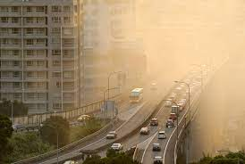
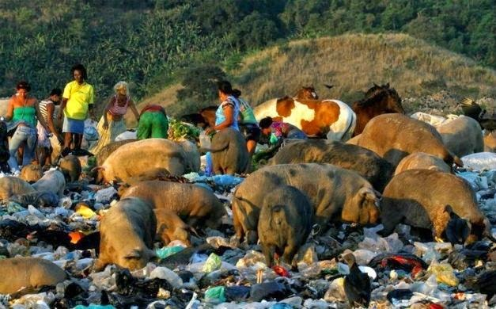

COMO PODEMOS PROTEGER A VIDA TERRESTRE.

Podemos afirmar que hábitos diários como a economia de água e energia da
reciclagem e redução de lixo, descarte responsável e o ajuste da alimentação para
consumo de produtos orgânicos e de agricultura familiar podem ajudar na pauta ligada
à Vida Terrestre. Entretanto, a mudança global também deve ser pensada a partir dos
grandes meios de produção e consumo desenfreado. No Brasil, às leis de regulamentação
relativas à proteção florestal buscam resolver a problemática, mas por vezes as mudanças
legislativas ambientais apontam para um cenário ainda mais desanimador. Nos ultimos anos cada vez mais podemos ver
o quanto as produções tem afetado a vida terrestre,quanto a nós devemos diminuir o consumo, aprender a reutilizar,e mobilizar
também as pessoas ao nosso redor a fazerem isso também.
As ações humanas mal planejadas para ocupação dos espaos territoriais e desenvolvimento de
suas atividades em solo e água já determinaram a perda de 60% das espécies do nosso laneta.Há uma
estimativa de que no mundo existiam ainda cerca de 8,7 milhões de espécies de vida, incluindo fauna e flora, contudo,
muitas ainda não foram indentificadas. Aproximadamente 60% da supérficie territorial brasileira ainda é coberta por ecossistemas
naturais, porém, essa porcentagem não é igual a todas as regiões brasileiras. No Brasil, as taxas de desmatamento
e de grandes incêndios vêm aumetando nos ultimos anos, no entanto, esses numeros podem ser revertidos, possibilitando a reintroduão
das atividades agrossilviculturais produtias para a geração de alimentos, fibras e energia.
CONSEQUÊNCIAS DO MAL CUIDADO COM A VIDA TERRESTRE

A poluição do ar tambem é um grande fator pro baixo nivel da vida terrestre isso inclui
As mudanças climáticas que não são uma ameaça distante, elas estão acontecendo agora mesmo. Os últimos três anos foram
mais quentes do que qualquer outra época. A TNC está concentrada em soluções inovadoras, que respondam à urgência
dessa crise. Nós estamos protegendo e restaurando florestas, melhorando a agricultura, ajudando comunidades a
construir resiliência e trabalhando para garantir um futuro com energia limpa. Com apoiadores como você, nós
podemos deter a marcha catastrófica das mudanças climáticas, para que comunidades e paisagens possam prosperar.

O plástico está arruinando a saúde de comunidades em todo o mundo. Ele envenena a
terra e é despejado no oceano – matando tartarugas, aves marinhas e outros animais. Mas não para por aí: a ciência
já mostrou que os plásticos são uma ameaça à saúde pública! Os microplásticos, por exemplo, se acumulam no ar que
respiramos, em nossa comida e até em nossos corpos. Não dá pra ficar como está!Em 2022, na Assembleia das Nações Unidas
para o Meio Ambiente, governos do mundo todo decidiram negociar – até o final de 2024 – um tratado global para combater
a poluição plástica. Um acordo forte poderá responsabilizar quem polui – um grande passo em direção a um futuro livre
de plásticos! Mas precisamos garantir que essas promessas saiam do papel.